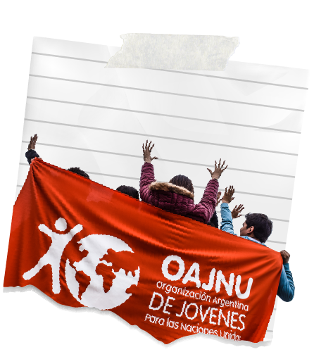

VOLUNTARIADO EN OAJNU CÓRDOBA

Si terminaste los estudios secundarios y tenes menos de 30 años te esperamos para formar parte de OAJNU Córdoba. A principio y a mediados de cada año hacemos una convocatoria de nuevos/as voluntarios/as, las personas que se anotan a la convocatoria asisten a una reunión informativa donde te contamos un poco más sobre las más de 15 áreas en las que podes ayudar en la organización, posteriormente las los/as intyeresados se someten a un proceso de inducción de carácter obligatorio que finaliza con la firma de la adhesión a OAJNU.